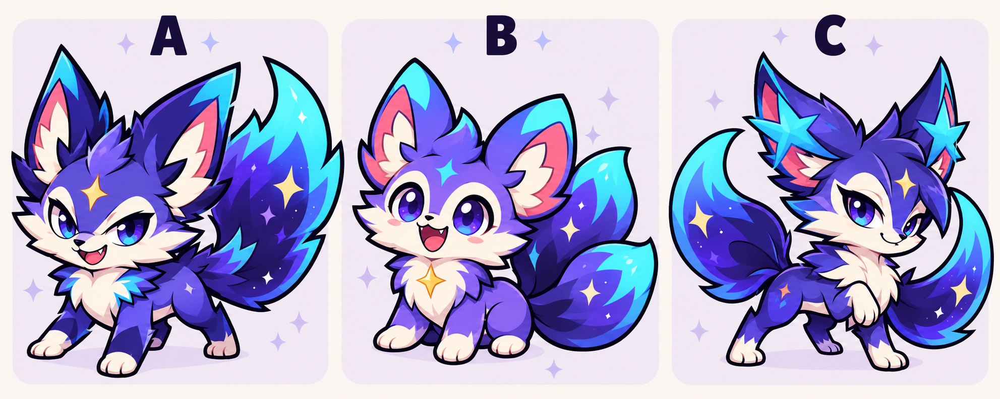

A · Tinh nghịch
Dáng đứng chắc, ánh mắt tự tin, một đuôi lớn. Hình khối dễ nhận diện khi thu nhỏ trong trận.
BẢN MẪU ĐỂ LỰA CHỌN
Cùng một loài ở dạng cơ bản, ba cách thể hiện khác nhau: viền đậm, màu rực, đầu lớn thân nhỏ và biểu cảm rõ. Trên điện thoại, cuộn xuống để xem từng mẫu; bấm vào ảnh để mở bản ghép đầy đủ và phóng to.

Dáng đứng chắc, ánh mắt tự tin, một đuôi lớn. Hình khối dễ nhận diện khi thu nhỏ trong trận.
Mắt tròn, dáng ngồi nhỏ nhắn, ba đuôi xòe. Hợp cảm giác nuôi một người bạn dễ thương.
Ánh mắt sắc, hai đuôi cong, điểm nhấn ngôi sao trên tai. Cá tính hơn và thiên về cảm giác vệ binh.
Xem xong, hãy nhắn A, B hoặc C trong cuộc trò chuyện, hoặc nói những chi tiết bạn muốn kết hợp. Đây là trang xem mẫu; hình linh thú trong game chưa được thay đổi.